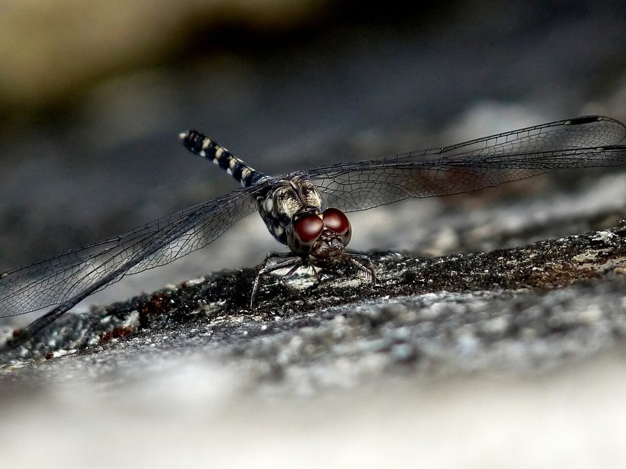

ग्रेनाइट घोस्टGranite Ghost
Bradinopyga geminata · Libellulidae · INS-0098

- Scientific name वैज्ञानिक नाम
- Bradinopyga geminata Rambur, 1842
- Family कुल
- Libellulidae
- Hindi हिंदी
- ग्रेनाइट घोस्ट
- Local names स्थानीय नाम
- granite ghost, granite ghost dragonfly, granit ghost
- Status here यहाँ की स्थिति
- native
- Movement आवागमन
- Resident, here all year
- IUCN IUCN
- LC
- Review समीक्षा
- audited and independently read
When to look कब देखें
Present all year. साल भर मौजूद।
Tell it apart from इनसे अलग पहचानें
ग्रेनाइट घोस्ट / Granite Ghost
Bradinopyga geminata Rambur, 1842 — Libellulidae
ग्रेनाइट घोस्ट — पूर्वी उत्तर प्रदेश के पत्थरीले तालाबों और चट्टानों के पास की नहरों में पाई जाने वाली एक छोटी, हल्के भूरे या काले रंग की व्याधपतंग है। इसका नाम इसके हल्के भूरे-भूसे रंग से आया है जो पत्थर जैसा दिखता है। नर का शरीर काले रंग का होता है जबकि मादा का रंग हल्का भूरा होता है। यह अपने इलाके की बहुत सतर्कता से रक्षा करती है और कभी अपनी पसंद की चट्टान या पत्थर को छोड़ती नहीं है। यह व्याधपतंग बहुत तेज़ उड़ती है।
Quick Identification त्वरित पहचान
| Feature | Description |
|---|---|
| Size | Small dragonfly (body length 24–30 mm; wingspan 38–48 mm) |
| Male Colour | Black or very dark brown body; grey or pale straw-coloured thorax |
| Female Colour | Duller, pale brown or yellowish-brown body with similar thorax markings |
| Perching Behaviour | Strongly territorial; habitually returns to specific rock or stone perches |
| Habitat Preference | Rocky water bodies; perches on exposed rocks rather than vegetation |
Field tip: Look for a small, dark dragonfly perching on exposed rocks or boulders near water. The habit of repeatedly returning to the same rock perch is very distinctive. Males are nearly black; females are pale brownish. The association with rocky substrates is key.
Morphology आकारिकी
Biometrics (typical measurements in the northern Indian plains):
| Measurement | Range |
|---|---|
| Body length | 24–30 mm |
| Hindwing length | 16–21 mm |
| Wingspan | 38–48 mm |
Adult description: The male has a predominantly black or very dark brown abdomen with a greyish or pale straw-coloured thorax and head. The wings are clear with dark veins. The female is considerably duller, with a pale yellowish-brown or tan body and similar thorax coloration. Both sexes have relatively robust bodies and large compound eyes. The legs are robust and specialized for gripping rough stone surfaces.
Vocalisations
Odonates do not possess vocal organs and cannot produce true vocalisations.
- Sound production: Wing-whirring occurs during territorial chases and mating displays. Wing-beat frequency is approximately 20–25 Hz.
Behaviour & Ecology व्यवहार और पारिस्थितिकी
The Granite Ghost is a highly specialized dragonfly adapted to life on rocky substrates. Males are extremely territorial and show remarkable site fidelity, repeatedly returning to the same rock or stone perch from which they sally forth to hunt or chase competitors. The species shows preference for habitats with exposed rock, including rocky streams, exposed pond banks, and areas with granite or basalt outcrops. Females are more cryptic than males and less frequently observed. The species is most active during the cooler parts of the day and is less active during peak summer heat.
Larval (Naiad) Stage
The larval stage is aquatic and associated with rocky substrates.
- Body form: The naiad is small, streamlined, and typically brown or grey, matching rocky substrates.
- Habitat and duration: Larvae live in crevices among rocks and pebbles in flowing or still water. The larval stage lasts approximately 5–7 weeks.
- Emergence: Adults emerge mainly from October to January, with a smaller peak in monsoon months.
Life Cycle / Phenology जीवन चक्र
- Egg: Laid by the female dipping her abdomen into water among rocks.
- Larva: Present year-round; feeds on small aquatic prey.
- Emergence: Peak emergence from October to January.
- Adult lifespan: Approximately 3–4 weeks.
- Seasonality: Present year-round with highest abundance during cooler months (October–February).
Host Plants or Prey आहार
Prey (adults):
- Small flies
- Tiny mosquitoes
- Small gnats
- Small mayflies
Prey (larvae):
- Mosquito larvae
- Small aquatic insects
- Minute crustaceans
Predators / Natural Enemies शत्रु
- Birds: Small insectivorous birds.
- Larger insects: Larger dragonflies and robber flies.
- Spiders: Small spiders hunting near rocky areas.
Agricultural / Human Relevance कृषि प्रासंगिकता
Stream and rocky water indicator. The presence of Granite Ghost indicates the presence of rocky habitats and cooler water bodies. While not directly relevant to agriculture, its presence indicates water quality and habitat structure beneficial for stream ecosystems.
Expected Locally स्थानीय रूप से अपेक्षित
Not a field record. Written from published accounts for eastern Uttar Pradesh. No confirmed local sighting yet — if you have seen it, that is what the atlas needs.
अभी तक स्थानीय पुष्टि नहीं। यह विवरण प्रकाशित स्रोतों से है, किसी अवलोकन से नहीं।
This species should be expected in Basti district near rocky areas where water bodies have exposed stone substrates, including rocky ponds, pools near hillsides, and possibly rocky sections of larger water bodies. Look for small, dark dragonflies (males) or pale brownish dragonflies (females) perching on rocks. Males are highly territorial and will repeatedly return to the same rock. Peak activity from October to February during cooler weather. The first local record would be a photograph with place and date; send it to the atlas contact on the About page.
Distribution वितरण
Global range: Widespread across Africa and Asia, from southern Africa through the Middle East and South Asia to Southeast Asia.
In India: Distributed throughout the peninsula, particularly in regions with rocky substrates and cooler water bodies.
In Uttar Pradesh: Present in districts with suitable rocky habitat.
In Basti district / eastern UP: To be expected in areas with rocky water bodies and exposed stone substrates.
Research Questions शोध प्रश्न
Anyone can investigate these | कोई भी इन प्रश्नों की जाँच कर सकता है
- How consistent is a male Granite Ghost's fidelity to the same rock perch over a season? — Mark individual males and track their perching site.
- What is the average perching distance between competing males, and how does it change with temperature? — Measure distances between territorial males on different days.
- Do females visit specific rocks more frequently than males, and are these the same rocks? / क्या मादाएँ नरों की तरह एक ही चट्टान पर लौटती हैं? — Observe female behavior and visitation patterns.
- How does water flow rate in streams affect larval development time? — Compare development in still water versus flowing sections.
- What percentage of emerging adults successfully complete wing expansion in rocky versus vegetation-rich habitats? — Monitor emergence success in different substrate types.
Similar Species मिलती-जुलती प्रजातियाँ
| Species | How to tell apart | हिंदी | |
|---|---|---|---|
| [[scarlet_skimmer\ | Scarlet Skimmer]] (Crocothemis servilia) | Larger; bright scarlet-red body; prefers vegetation-rich water | सिंदूरी व्याधपतंग — लाल, बड़ा |
| [[common_picture_wing\ | Common Picture Wing]] (Rhyothemis variegata) | Patterned wings with dark and light patches; prefers vegetation-rich shallow water | पिक्चर विंग — पंखों पर चित्र |
Field rule: Small dragonfly, predominantly black or pale brown, perching repeatedly on exposed rocks and boulders near water, is the Granite Ghost.
Taxonomy & Classification वर्गीकरण
Original description. Pierre Rambur described the Granite Ghost as Diplax geminata in 1842 in his work Histoire naturelle des insectes. Névroptères (p. 135). The type locality is an unspecified location in Asia. The genus Bradinopyga was established by Kirby in 1889. The species name geminata refers to the paired or geminate features.
Subspecies. Monotypic or with limited subspeciation; B. g. geminata is the widespread subspecies including UP.
Family and order placement. Order Odonata, family Libellulidae.
Phylogenetic notes. Bradinopyga geminata is a specialist for rocky habitats and shows close relationships with other African and Asian rock-dwelling darters.
IUCN status rationale. Listed as Least Concern (LC). Widespread and stable across its range despite habitat specificity.
Photo Gallery फोटो गैलरी
No photos yet — add field photos to media/species/granite_ghost/ and run node scripts/sync_photos.js.
Photos needed आवश्यक फोटो
- [ ] Adult male on rock (चट्टान पर नर)
- [ ] Adult female (मादा)
- [ ] Rocky habitat (पत्थरीला आवास)
References संदर्भ
- Rambur, P. (1842). Histoire naturelle des insectes. Névroptères. Librairie Encyclopédique de Roret, Paris, p. 135. [original description]
- Fraser, F.C. (1936). The Fauna of British India, including Ceylon and Burma. Odonata. Vol. 3. Taylor and Francis, London.
- Subramanian, K.A. (2009). An Annotated Checklist of the Odonata (Insecta) of India. Occas. Publ. Zoo. Surv. India, Kolkata, Vol. 302, pp. 1–32.
- Ferreira-Peruquetti, P.S. & Macedo, M.V. (2006). Habitat preference of dragonfly (Insecta: Odonata) communities in streams from the vicinity of Manaus, Central Amazonia, Brazil. Revista Brasileira de Zoologia 21(4): 701–712.
- IUCN SSC Odonata Specialist Group. (2024). Bradinopyga geminata. IUCN Red List of Threatened Species. Ver. 2024.
- GBIF Occurrence Data — Bradinopyga geminata, South Asia (2010–2025).
Source file: species/fauna/insects/granite_ghost.md